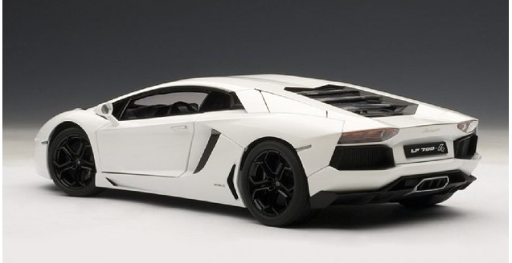
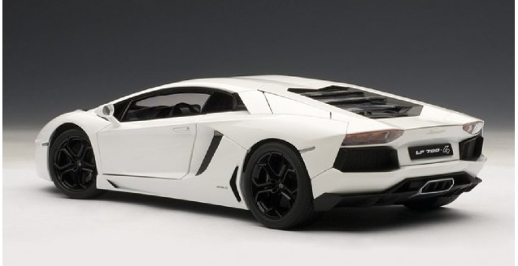

Lamborghini Aventador
 

Lamborghini Aventador — повнопривідний суперкар італійської спортивної преміум-марки Lamborghini. Представлений на Женевському автосалоні в березні 2011 року. Є заміною Lamborghini Murciélago.
Lamborghini Aventador оснащується двигуном з безпосереднім впорскуванням палива. Двигун - дванадцятициліндровий, об'ємом 6,5 л і потужністю 700 к.с. Розгін від 0 до 100 км/год відбувається за 2,9 с; максимальна швидкість - 350 км/год.
Машина оснащується семиступінчастою роботизованою коробкою передач і полегшеним алюмінієвим шасі. Споряджена маса - 1575 кг.
Історія
Як і з моделлю Murciélago, материнська компанія експлуатувала тему кориди. У рекламних матеріалах Lamborghini стверджувалося, що Aventador - це знаменитий бик, вирощений синами дона Челестино Куадрі Відеса, який прославився після одного з найбільш кровопролитних боїв в Сарагосі, за який отримав престижну нагороду «Trofeo de la Peña La Madroñera» за видатну хоробрість на арені. Приставка LP 700-4 в кінці назви означає технічне оснащення автомобіля, де 700 позначає потужність в к.с., а 4 - повний привід.
Maserati GranTurismo
Maserati GranTurismo — це люксові спортивні купе класу Гран-турізмо, що виробляються компанією Maserati з 2007 року.
Двигун V8 Ferrari об'ємом 4,2 літра розвиває потужність 298 кВт. Співвідношення маса/потужність у GranTurismo дорівнює 4,6 кг/к.с. Автомобіль оснащується 6-ступінчастою автоматичною коробкою передач ZF. Довга колісна база і короткі звіси забезпечують досить просторий внутрішній простір для чотирьох чоловік.
Розганяється купе гранично рівно. Від можливої пробуксовки рятує самоблокований диференціал: при розгоні він блокується на 25%, а при гальмуванні двигуном - на 45%, що запобігає ранньому зриву в занос при скиданні газу в повороті.
Історія
Платформа для GranTurismo була запозичена від Quattroporte з невеликими змінами. Зокрема, скоротили на 125 мм колісну базу, трохи коротшим став задній звис, а сам дводверний кузов став на 30% жорсткішим. Силовий агрегат був зміщений назад завдяки чому компоновка по осях вийшла майже ідеальною - 49:51.З літа 2008 року Maserati також випускає S-версію GranTurismo з двигуном V8 Ferrari об'ємом 4,7 літра розвиває потужність 323 кВт. Версія кабріолет представлена в 2009 році на Франкфуртському автосалоні під назвою Maserati GranCabrio, серійне виробництво почалося в 2010 році.
Ferrari F12 Berlinetta
Ferrari F12 Berlinetta — Gran Turismo італійського виробника спортивних автомобілів Ferrari, яка вперше показана на Женевському автосалоні 2012 року і продається з 2012 року. Вона є наступником Ferrari 599 GTB Fiorano.
F12 Berlinetta оснащена 6,3-літровим двигуном V12 потужністю 740 к.с. (544 кВт) і крутним моментом 690 Нм, що робить її найпотужнішою дорожньою Ferrari всіх часів. Автомобіль розганяється за 3,1 секунди від 0 до 100 км/год, за 8,5 секунди до 200 км/год і досягає максимальної швидкості 340 км/год.
На ринку Італії автомобіль буде коштувати 274 400 євро.
Історія
Назва «Berlinetta» відсилає нас до класичних Ferrari. Ще в 30-х роках італійці так називали найбільш швидкісні спорткупе. За основу мотора новинки був узятий двигун від Ferrari FF, який допрацювали і форсували. Застосування різних технологій збирання і з'єднання компонентів дозволило знизити вагу автомобіля до 1525 кг. Довжина F12 — 4 618 мм, ширина — 1 942 мм, висота — 1 273 мм. Тобто новинка на 47 мм коротша, на 20 мм вуща і на 63 мм нижча, ніж модель 599.